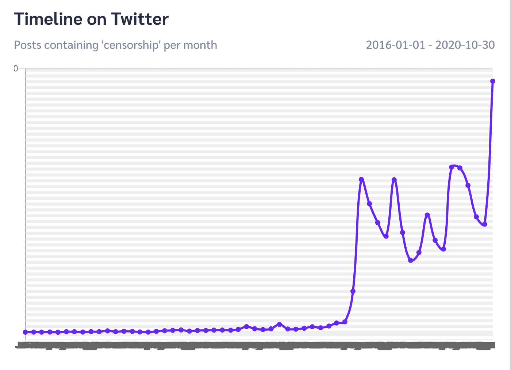

How Often Do People Post About "Censorship?"
People are writing about censorship more than ever.
On Reddit (Since 2016), posts about censorship have been increasing at a relatively steady rate.
Since 2016, Tweets about censorship were relatively minimal. Then, 18 months ago, the rate suddenly increased and has continued to since.